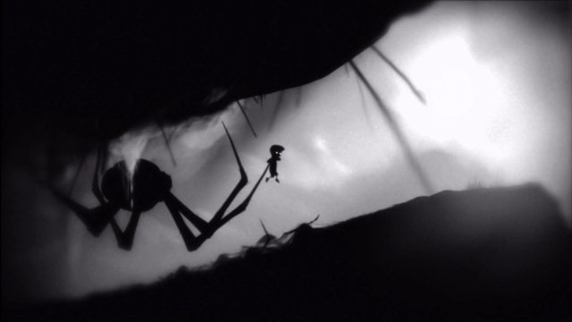

Beginning Note: In this media paper, my purpose is to explain the ways in which modern game developers immerse you into their worlds. This paper assumes the following- You are college-educated with basic knowledge of video games and the game LIMBO, you are farmiliar with how basic audio, video, and design features work in video games, you have experience with interactive media, you have some knowledge of cultural studies (the paper will define specialized terms and briefly introduce authors mentioned). In this work, I will do my best to be simple, clear, and honest.
Video games as an artistic and narrative medium is something that more and more of the general public are beginning to recognise. Early video games were not necessarily created with an artistic approach but many still have a defined aesthetic and can make you feel a certain way. It's becoming increasingly common for people to look back on games from their childhood or maybe from a decade or less ago and analyze them with a more matured artistic lens in order to understand just what makes them tick. Why do we feel such a nostalgic connection to some of these games? Why does my hair raise when I hear the boss music start to play? What is it about the atmosphere in that one level of the game that causes you dread outside of the game?
LIMBO is an excellent game to analyze the minute details of in this regard because, in the grand scheme of things, it is relatively simple and each detail is easier to pick out from the rest. The colors are greyscale, there is no soundtrack other than the ambient background noise, and the controls are simply to move left and right, jump, and grab. However with such a limited pool of tools for the artists to work with, they are able to create an effect in which you as the player feel integrated and immersed into this world, and they are able to do so making use of an effect known as Barthes' "Reality Effect." In this effect, the 'descriptive' elements are those which do not carry the plot forward but rather describe the world around it, and the 'predictive' elements are those which are driving the plot of the narrative. In order to achieve the Reality Effect, it is integral to interweave the two in a back-and-forth manner. Without the predictive, there is just details with no context, and without the descriptive there is simply a plot that is not expanded upon in a way to be immersed into.
The first time I experienced a real strong memorable moment with the Reality Effect was when the spider catches up to you and instead of simply impaling you like it had previously done many times, it gently grabs you and wraps The Boy up in its webbing. See screenshot below:
Screenshot from LIMBO

Initially as you are running from the spider through the cave, you know the Boy is able to outrun it, but then you hit the area in the cave with webbing on the ground and suddenly you're going much too slow and can't jump. Then you notice the spider creeping into frame behind you, and immediately after you realise there are other corpses in the webs you are trapped in. At this time I was immersed in the game but then questioned from a persepective outside of the game whether I would actually be able to escape just barely and the game wanted me to have this feeling of barely surviving, or if I would in fact die here. Then the spider does its animation it had done before where it stabs at you lifting you off the ground and I immediately assumed I had died and would need to find another way through the cave when the Boy wakes up again. This time though, instead of the Boy being killed the spider slowly lifts you to more webbing and wraps your character up, only for you to then have to play the next section of the game with the Boy hopping around in the webbing. This moment is very memorable to me not only in how cinematic and perfectly scripted it was, and not only in the horrific imagery, but in how the game was able to genuinely persuade me inside and outside of the screen that the Boy had died, and then subvert this expectation with the spider wrapping animation. This is when I believe I realised and became aware of the Reality Effect on me during this game. The small patch of grass at the exit of the cave, the corpses in the webbing, the sharp branches or limbs through the cave, these small details have no immediate presence in the context of the narrative nor the context of gameplay, but yet they are deliberately placed there. According to Barthes, "Description is entirely different..." (than the Predictive): "it has no predictive mark... its structure is purely summatory and does not contain that trajectory of choices and alternatives which gives narration the appearance of a huge traffic-control center..." (Barthes The Reality Effect 142-143). Essentially Bathes posits that the back and forth between the predictive (narrative) elements, and the descriptive is what creates the reality effect. In the example of the spider cave, without the descriptive small details I would not have been able to return back to the immersion of the game as I would be still questioning what the game intended me to do, but without the predictive elements such as the boy and spider the situation presented would have no means of being immersed in the first place and no context in which to create these feelings using the descriptive.
I'd like to compare how this effect is used in LIMBO to a more modern video game example, Hollow Knight. This is a similar game in that it's a platformer with occasional puzzles, but in this game you make your way through a sprawling underground full of dangers and wonders alike. You play as a little bug with a nail for a sword discovering the secrets of the ruined kingdom of Hollownest as you must face very difficult challenges. Much the same way as you often must die in LIMBO to understand the puzzle, you will likely die in Hollow Knight to understand how to overcome the obstacle. The game is very tough and sometimes punishing, but offers occasional reprieve in the form of benches, which are safe areas where you may rest and heal and take a look at your map to regain your bearings before setting off into the unknown once more. Now having explained the context, the explaination of the reality effect will make more sense.
Below is a scene from Hollow Knight shortly after discovering the City of Tears, after having trudged through a very difficult Fungal Wastes. For best effect, listen to/ watch the video while reading the rest of the paper!
In the video your character can be seen on the left, head down resting, while on the right is a friendly warrior character you had met previously. You have just spent several hours wandering around the Fungal Wastes and finally happen across the gates to an old abandoned city. While making your way through the raining city, your small bug limbs pattering in the puddles, (your health bar also likely very low), the music changes from an ominous adventure to a serene melody with a piano twinkilng away while vocals accompany a soft melody by violin. The ominous or mysterious tone of the music still lingers in the song, but for now you feel as though you can finally rest peacefully if only for a moment. The area is illuminated by little fireflies, rain drips in the foreground and background, trickling along the glass. Moss covers the room letting you know this place is worn with age.
So, the descriptive elements of the rain drops, the sounds, the bug lanterns, and the moss perfectly compliment the predictive elements such as the journey through the city, the friendly knight sitting with your sleeping character on the bench. Without the context presented by the predictive, the descriptive cannot truly immerse the player and make them feel the intense struggle of these areas and then give them this genuinely blissful feeling reprieve. These emotions are real, and the artists creating the game are very careful about the timing, placement, and context in order to create the Reality Effect to the player. Whenever I struggle my way through an ominous area in both Hollow Knight and LIMBO, I feel as though I am in this world and act as though it were real using the rules presented to me. I am also able to accept the narrative as well as the game's system and rules as "Real" because of the back and forth between the predictive and descriptive.
Ending Note: I highly reccomend Hollow Knight to anyone, it's my favorite game and has dozens upon dozens of emotion- evoking moments just like this one, as long as you are willing to push through the challenge. Both of these games are masterpieces of gaming as an art form.